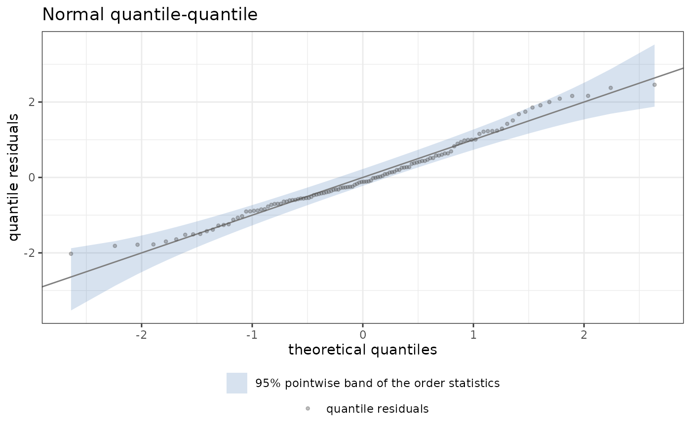
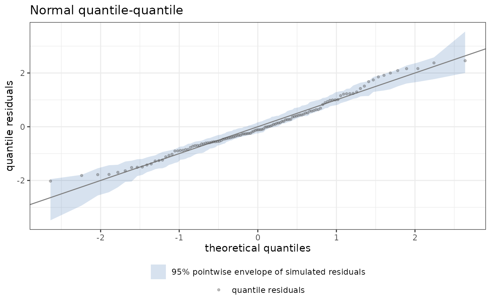

Selects the graph of the quantile residuals of a fit against the quantiles of the standard normal distribution, with the line \(y = x\) and a pointwise band.
Arguments
- band
"order"(the default) or"simulated".- level
The level of the band.
- n_sim
The number of simulated responses of
band = "simulated".- seed
A single number that seeds the randomization and the simulation, or
NULLfor the ambient state.- legend
Whether to draw the legend that names the elements of the graph.
Value
A PlotQq object, inheriting from diagnostic_plot.
Details
The quantile residual \(r_i = \Phi^{-1}(F(y_i; \hat\theta_i))\) is
standard normal under a correct model (residuals.StatmodFit()), and the
sorted residuals are drawn against \(\Phi^{-1}(p_i)\), with \(p_i\)
from stats::ppoints(). With band = "order" the band at position \(i\)
is the interval of level level of the \(i\)-th order statistic of \(n\)
uniform variables, a \(\text{Beta}(i, n + 1 - i)\) variable, mapped by
\(\Phi^{-1}\). With band = "simulated" the band is the pointwise
interval of the sorted quantile residuals of n_sim responses drawn by
simulate.StatmodFit(), each evaluated under the fitted parameters
without refitting. For a discrete family the residuals are randomized, and
seed makes them reproducible. The graph is not defined for a
multivariate family.
Examples
set.seed(1)
dd <- data.frame(x = runif(120))
dd$y <- 1 + dd$x + rnorm(120, sd = 0.4)
fit <- statmod(y ~ x, distributions7::gaussian1_distrib(), dd)
ggplot2::autoplot(fit, plot_type = plot_qq())

ggplot2::autoplot(fit, plot_type = plot_qq(band = "simulated", n_sim = 49,
seed = 1))
